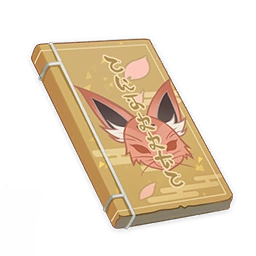

New Chronicles of the Six Kitsune¶

Prologue¶
Note
Stories about memories are always closely intertwined with transience. This book is not all-new, but is an adaptation of "Urakusai's Chronicles of the Six Kitsune."
Stories relating to memory always seem to have to do with those moments where you gain something and lose it straight away.
If you're wondering how I came to write about it, it's hardly the most exciting story.
That night, I was drinking and killing time at the Uyuu Restaurant when I happened to run into an old friend that I hadn't seen in forever. I don't know when she arrived, but at some point I suddenly noticed her sitting there in one of the booths.
"My, my, now, who could this be, sitting there in such a good mood, yet drinking all alone?"
Since she was asking, I thought I might as well mutter something in response:
"The best liquor comes at the highest price, and sometimes that price is waiting alone."
"Pff, I've definitely heard that one before... Still as boring as ever, I see."
Thus remarked the chief editor as she stood there with a liquor cup in hand, looking very enthusiastic about the prospect of having a drink or two.
"Why not earn yourself some drinking money? It's not like you've got anything better to do."
"Tonight, though, the drinks are on me."
She laughed, and reiterated this a couple more times.
"You're back."
I watched as the evening breeze brought a few flower petals from the Sacred Sakura and landed them in her cup, making ripples that disturbed the reflection of the moon.
Overcome by a strong sense of déjà vu, my mouth took it upon itself to proceed with an utterance that would prove to be something of an embarrassment to my brain.
"You're drunk."
She didn't look very happy to hear that, and retorted with a firm and defiant tone in her voice.
But her countenance quickly changed again as she placed her cup down on the table and let out a sigh:
"I wasn't even born yet when she left."
And I was still in my youth back then.
"You must be the only one still able to recite the stories she once told."
And just like that, I found myself roped into writing for the Yae Publishing House one more time. It's quite amusing, now I think about it.
To my faithful readers, please don't be upset. This should not be taken to mean that I am committed to no longer writing save for when it becomes a selfish indulgence.
After all, there's some great liquor that's soon to decrease in price, and I have to make sure I'm prepared. Besides, I have to pay the chief editor back for the wine she so kindly bought me that night.
Vol. 1¶
Note
The story of the "Black Fox" Itaru was actually the third volume in the original "Urakusai's Chronicles of the Six Kitsune." It appears at the front of this edition due to the writer's personal preference.
Forgive my garrulousness, but there are still some things to get out of the way before the story begins in earnest.
Why the "new" chronicles of the six kitsune?
Naturally, the word "new" here presumes the existence of an "old." This book is a slightly revised edition of Urakusai's Chronicles of the Six Kitsune, which enjoyed a period of great popularity five hundred years ago. I possess but limited writing skills, and can only hope that Urakusai and my other readers will peruse these pages with forgiving eyes.
Urakusai was already famous when I was but a small child. By that time, the Saiguu had already taken great interest in Urakusai's literary abilities and expertise on tea, making Urakusai one of the most cultured and sophisticated of all the kitsune.
Unfortunately, that is all in the past now. Urakusai made a grave mistake and had to leave. It has now been 500 years since then...
Without further ado, the story of the New Chronicles of the Six Kitsune begins on the towering Mt. Yougou.
Legend has it that in the time of the Great Kitsune Hakushin, she had six apprentices. All were greatly skilled in magic and in shape-shifting. Day-to-day, they were tasked with assisting their matriarch, Hakushin, in managing the shrine and defending Mt. Yougou.
The eldest of the six was Itaru the Black Fox, who, unlike most other females, was built as broad as a bear and as strong as a tiger. She also had a wild and unruly personality. One day, she was being drunk and disorderly in the main hall of the shrine, and destroyed a shintai that represented the Shogun. Incensed, Hakushin banished Itaru from the mountain for a period of much-needed self-reflection.
But Black Fox Itaru was all too happy to leave the mountain behind. She put Hakushin's warnings completely out of her mind, found a bottle of good-quality liquor, and headed straight for the nearest village to look for trouble.
Vol. 2¶
Note
This volume recounts the clash between "Black Fox Itaru" and the "Twin Oni of Tokaku." This tale was missing from the original text, but it was fortunately rediscovered at a later date. It is presented here in an edited form.
Continuing where we left off, Black Fox Itaru was on her way to the village looking for trouble when she saw two women standing at the side of the road dressed like lumberjacks. Both had three blades hanging from their waist: a seven-foot-long nodachi, a kodachi, and a wakizashi. They were armed to the teeth, and they weren't hiding it.
As her big, bulky silhouette approached from a distance, the ground shook and dust went flying with each step she took — all of which put the two women on high alert. They grasped the hilts of their blades, ready to draw them at any moment, and asked in unison:
"Who are you? Are you a youkai!?"
The silhouette answered:
"Haha, that's exactly what I am!"
Without hesitation, the two women immediately drew their swords and stepped forward, intending to slay Itaru. But this was one youkai they had underestimated. She dodged their attacks in a single step, grabbed their wrists, and twisted them as she turned sideways, sending both of their seven-foot-long nodachi clattering to the ground. Alarmed by the pain, the two reached for their kodachi, but they were too late. Itaru sent one of them flying to the ground with an almighty slap, while placing the other into a headlock. Then, she grabbed the one under her arm by the scruff of the neck and lifted her up into the air, placing her foot on the other's chest to pin her to the ground.
"The Twin Oni of Tokaku? Looks like neither of you have learned anything from the beating I gave you last year for harassing the villagers!"
When the two bandits heard this, they panicked and started begging for their lives. Black Fox Itaru threw them to the ground and begin to speak:
"Fair enough. Well, I'm a masterless youkai now that I've been banished from the mountain by Hakushin. Why don't the two of you join me? We'll go around helping those in need. It'll be fun!"
Vol. 3¶
Note
In the 500-year-old "Urakusai's Chronicles of the Six Kitsune," Youzan and Yui went on to have their own tales. But at this time, the mother-daughter pair are still reliant on Itaru to rescue them.
Continuing where we left off, Black Fox Itaru successfully tamed the bandit duo, the Twin Oni of Tokaku, and the three set off on their new journey of chivalry.
As the chivalric trio was resting in Konda Village, they ran into a mother and her daughter.
After striking up a conversation, they learned that the mother's surname was Youzan, the daughter's given name was Yui, and that both were musicians from the distant Seirai Island visiting Inazuma City to join in the festival. On their way, they had been scammed by a Lavender Melon seller from the village: He had offered them a few melons to quench their thirst, ostensibly out of the goodness of his heart, before then insisting that they purchase more of his melons at an extortionate price. But touring musicians aren't exactly wealthy, and they couldn't afford to spend the entirety of their budget for the return trip on overpriced melons...
The Twin Oni of Tokaku are an impulsive pair. Upon hearing the story, they instantly began fuming with rage, and unanimously decided that they needed to teach this dishonest merchant a lesson by cutting him into tiny pieces. But Black Fox Itaru had another idea, and spoke up to stop the two sisters:
"Enough. I know what to do."
She comforted the mother and daughter:
"You two have nothing to worry about. Just watch, I'll talk to the merchant, and he'll come to his senses."
Itaru marched off to look for the dishonest merchant.
Vol. 4¶
Note
This is the tensest tale of the series, said to have been written by Urakusai upon his return from Liyue. It is featured in full in this writer's adaptation.
Continuing where we left off, Black Fox Itaru marched off to talk some sense into the dishonest merchant.
The Lavender Melon merchant, Dozaemon, was once a samurai. But with peace having prevailed in Inazuma for so long, his sword skills offered no further use, so he became a merchant in the village instead. After learning a few swindler's tricks, such as extortion, intimidation, and judicious use of his fierce appearance, no one dared confront him no matter how much he took from them. Over time, he had become one of the wealthiest people in the village.
On this day, Dozaemon was relaxing in front of his shop when all of a sudden, he saw dust flying and felt the ground shaking. Then, a shadow large enough to dwarf his shop slowly fell over his face.
"Hey! I want to buy some melons!"
Dozaemon narrowed his eyes and sized up the muscular, fierce-looking, and ill-mannered customer standing over him like an executioner, before finally realizing — oh, she's a woman...!
"How many?"
Apparently, this customer was in no hurry to answer. She was too busy admiring his wakizashi, which was lying on the chopping board:
"Mighty fine blade you got there."
"You got that right. I'll have you know I'm from a samurai clan. It's only fitting that I keep an heirloom nearby."
Dozaemon went along with the conversation, unaware of where it was heading.
"Shame. It's wasted on chopping melons."
Dozaemon sensed that this was an intentionally barbed remark, and he did not look happy about it:
"What's with all the chit-chat? Are you buying melons or not?"
"Oh, I am, I am."
Itaru smiled at Dozaemon as a gesture of apology.
"Four pounds of chopped Lavender Melon, without the skins, please."
Dozaemon's suspicions were aroused, but he did not question the request. He promptly chopped four pounds of melon and placed it onto the scale.
"Hey, how come your scale's all wonky?"
Dozaemon grasped his blade the moment Itaru said this.
"Well, isn't that something — this scale's got a mind of its own!"
"Glad you're so amused. But it's time to pay up now."
Dozaemon could no longer hold back his anger. The time for pleasantries was over — it was time to talk sense.
"Heh, I don't have a problem with paying you what you're due... I'm just not sure you'd be able to take it."
"Oh, don't you worry — I'll take whatever you've got to give!"
"You sure about that!?"
"Try me!"
Suddenly, Itaru yelled "take this!" and threw a bag full of Mora directly at Dozaemon's face. Dozaemon didn't react in time, and took the full force of the impact square on the nose. He fell backwards onto the ground as his precious wakizashi went flying from his hand and fell beside him. On closer inspection, his nose had been squashed completely flat by the bag of Mora: It looked just like the kind of pouch one might use to store a pipe, only without the pipe inside.
Itaru walked over and pressed her foot down on the dishonest merchant's chest. Without a word, she hit Dozaemon so hard it felt like a Liyue martial arts tournament was being hosted on his face. With great difficulty, he fought to get back on his feet, but just as he had stood up and grabbed his blade, Itaru noticed and landed another ferocious blow to his head. This time, it hit so hard that a pair of tanuki ears popped out in response. He began to beg for mercy.
Itaru burst out laughing at the sight in front of her. So, the merchant is a youkai in disguise — and a filthy tanuki at that!
Itaru promptly confiscated the tanuki's stolen wakizashi, distributed most of its ill-gotten wealth among the villagers, and handed the rest to the mother and daughter who had fallen victim to its scheme earlier. Itaru spared the tanuki's life — albeit not without some reluctance — and continued on her way.
Vol. 5¶
Note
Commentary regarding ancient matters that was specially added to the "New Chronicles of the Six Kitsune." If you find it an insipid, monotonous slog, dear reader, you may skip this volume. But as far as the author is concerned, this is one waste of words and emotion that cannot be avoided.
We shall bring the anecdotes of Black Fox Itaru to a close for now. Please forgive me for nagging, but I have some old matters I wish to comment on.
Now, it is no longer well-known how exactly Urakusai angered Lady Saiguu at that time. However, Lady Yae did offer to tell me some snippets of the history she experienced after having between two and eight drinks.
This is a novel, of course, so I naturally would like to turn these words into a story of what history has not recorded.
When the Kitsune Saiguu departed from the Hakushin Lands to take up her post at the Grand Narukami Shrine, Lady Yae still had yet to be born. As such, her early years were filled with stories and tales about Saiguu, and she loved and respected her greatly.
This is also why Lady Yae would eventually come to the Grand Narukami Shrine herself after embarking on her own travels.
Due to their closeness by blood, Lady Saiguu doted upon Lady Yae quite a bit, though Lady Yae speaks as little as possible about those times as she may nowadays...
—And while I as a novelist write to entertain, I shall refrain from revealing too much about Lady Yae's past, lest I suffer under the editor-in-chief's mighty pen.
But back to Urakusai. It is no longer clear how Urakusai angered Lady Saiguu back in the day, but it is known that his deeds may have had some connection to the later incursion of the Abyss.
However, after Urakusai had been driven out, the Kitsune Saiguu would no longer dwell at the Grand Narukami Shrine, but would instead set up permanent residence at Tenshukaku.
"A disaster that will engulf heaven and earth is coming. My duty is to defend the people and protect our lord, and so I must go to the Shogun's side."
When Lady Saiguu departed the second time, Lady Yae was but a young girl. The person she had pursued all this time now left her again. It was not until the untimely disaster swept across the archipelago that we understood the meaning of Lady Saiguu's words...
But it was too late, and things had not turned out as we would have wished.
This time, Lady Saiguu left a third time. This time, she departed forever.
Five centuries may seem long to mortals, but the joys and sorrows left by the things that happened during that time, whether to fleeting existences or enduring ones, are not easy to erase.